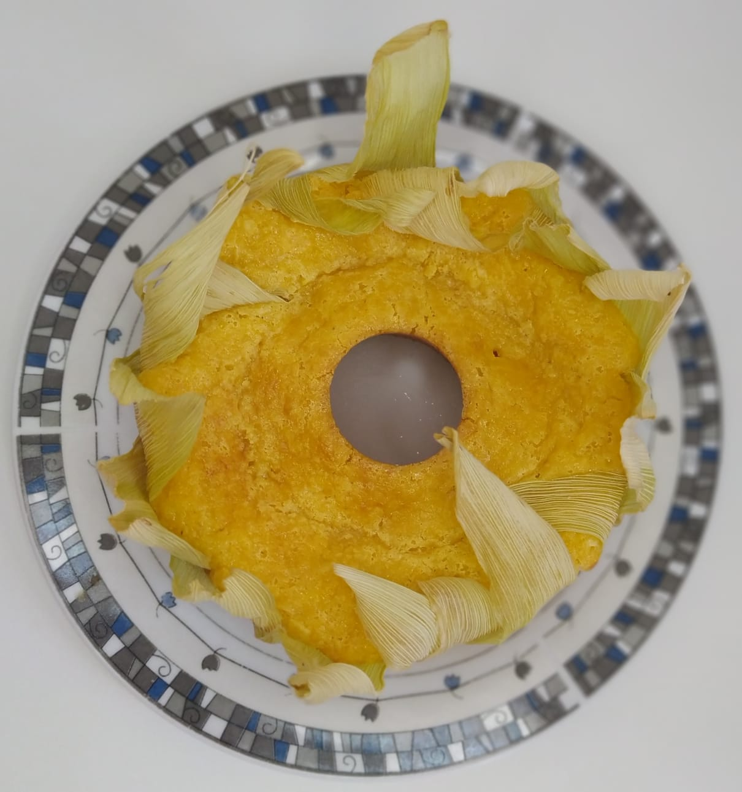

Caseirinho que vai te deixar com água na boca!
Ingredientes
- 3 ovos (150 g)
- 150 g de manteiga em temperatura ambiente (usei Batavo sem sal)
- 395 g de leite condensado (1 caixinha)
- 100 ml de leite integral em temperatura ambiente (100 g)
- 600 g de milho verde natural
- 50 g de creme de milho (pode substituir por fubá mimoso ou farinha de trigo sem fermento)
- 50 g de açúcar refinado (opcional)
- 50 g de coco ralado in natura (pode ser o coco em flocos industrializado)
- 100 g de queijo parmesão ralado (usei marca Vigor)
- 15 g de fermento (1 colher de sopa)
TODOS OS INGREDIENTES DEVEM ESTAR EM TEMPERATURA AMBIENTE!
Conteúdo em vídeo
Receita por Ana Paula Neris
- YouTube